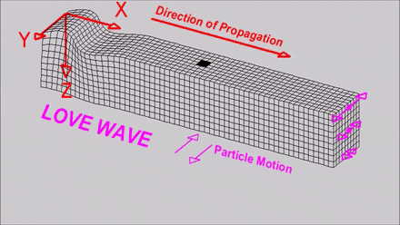
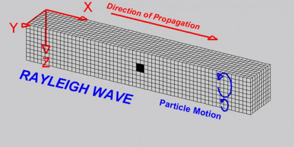

Studying the Earth's Interior
Earth's Interior. Earth is divided into three main layers. The dense, hot inner core (yellow), the molten outer core (orange), the mantle (red), and the thin crust (brown), which supports all life in the known universe. Earth's core is the very hot, very dense center of our planet. Scientists tried to explore and study the interior of the Earth. Yet, until today, there are no mechanical probes or actual explorations done to totally discover the deepest region of the Earth. The Earth is made up of three layers: the crust, the mantle, and the core. The study of these layers is mostly done in the Earth’s crust since mechanical probes are impossible due to the tremendous heat and very high pressure underneath the Earth's surface
What are seismic waves?
You learned that an earthquake is a vibration of the Earth produced by the rapid release of energy most often because of the slippage along a fault in the Earth’s crust. This energy radiates in all directions from the focus in the form of waves called seismic waves, which are recorded in seismographs.
The two main types of seismic waves are body waves and surface waves:
Long wave
Rayleigh wave
What are P and S-waves?
The P-wave (primary wave) is a pulse energy that travels quickly through the Earth
and through liquids. The P-wave travels faster than the S-wave.
After an earthquake,
it reaches a detector first (the reason why it is called primary). The P-waves also
called compressional waves, travel by particles vibrating parallel to the direction
the wave travel. They force the ground to move backward and forward as they are
compressed and expanded. Most importantly, they travel through solids, liquids and
gases.
The S-wave (secondary wave or shear wave) is a pulse energy that travels slower than
a P-wave through Earth and solids. The S-waves move as shear or transverse waves,
and force the ground to sway from side to side, in rolling motion that shakes the
ground back and forth perpendicular to the direction of the waves. The idea that the
S-waves cannot travel through any liquid medium led seismologists to conclude that
the outer core is liquid. Picture shows the vibration directions of P and S-waves.
Thickness of the Different Layers of the Earth
| Layer | Thickness in kilometers |
|---|---|
| Crust | 40 |
| Mantle | 2900 |
| Outer core | 2200 |
| Inner core | 1278 |
The Composition of the Earth's Interior
The Earth’s composition tells a story about itself. It gives us clues to its past and proofs about the gradual and slow changes that it has undergone for over 4.6 billion years.
The Crust
The crust is the thinnest and the outermost layer of the Earth that extends
from the surface to about 32 kilometers below. Underneath some mountains, the
crust’s thickness extends to 72 kilometers. The Earth’s crust, as gleaned from
the picture, is subdivided into two regions: the continental crust and the
oceanic crust.
The continental crust is mainly made up of silicon, oxygen, aluminum, calcium,
sodium, and potassium. The thickness of the continental crust is mostly 35-40
kilometers. Continental crust, found under land masses, is made of less dense
rocks such as granite.
The oceanic crust is around 7-10 kilometers thick which
its average thickness is 8 kilometers. It is found under the ocean floor and is
made of dense rocks such as basalt. The oceanic crust is heavier than the
continental crust.
The crust consists of two layers. The upper layer is composed of granite and is
only found in the continental crust. Below the granite is a layer made mainly of
basalt. This is found on both under the continents and the oceans.
Elements in the Earth's Crust
| Element | Percentage |
|---|---|
| Oxygen | 46.60 |
| Silicon | 27.72 |
| Aluminum | 8.13 |
| Iron | 5.00 |
| Calcium | 3.63 |
| Sodium | 2.83 |
| Potassium | 2.59 |
| Magnesium | 2.09 |
| Titanium | 0.40 |
| Hydrogen | 0.14 |
The Mantle
Beneath the crust is the mantle, which extends to about 2900 kilometers
from the Earth’s surface. It makes up about 80% of the Earth’s total
volume and about 68% of its total mass. The mantle is mainly made up of
silicate rocks, and contrary to common belief, is solid, since both S-waves
and P-waves pass through it.
The attempt to study the Earth’s mantle extended as far as studying the rocks
from volcanoes, simply because they were formed in the mantle. Scientists also
studied rocks from the ocean floor. They have determined that the mantle is
mostly made of the elements silicon, oxygen, iron and magnesium. The lower part
of the mantle consists of more iron than the upper part. This explains that the
lower mantle is denser than the upper portion. The temperature and the pressure
increase with depth. The high temperature and pressure in the mantle allows the
solid rock to flow slowly.
The crust and the uppermost part of the mantle form a relatively cool, outermost rigid shell called lithosphere and is about 50 to 100 kilometers thick. These lithospheric plates move relative to each other. Beneath the lithosphere lies the soft, weak layer known as the asthenosphere, made of hot molten material. Its temperature is about 300 – 800oC. The upper 150 kilometers of the asthenosphere has a temperature enough to facilitate a small amount of melting, and make it capable to flow. This property of the asthenosphere facilitates the movement of the lithospheric plates. The lithosphere, with the continents on top of it, is being carried by the flowing asthenosphere.
The Core
The core is subdivided into two layers: the inner and the outer core. The outer
core is 2900 kilometers below the Earth’s surface. It is 2250 kilometers thick
and is made up of iron and nickel. The temperature in the outer core reaches up
to 2000oC at this very high temperature, iron and nickel melt.Aside from seismic
data analysis, the Earth’s magnetic field strengthens the idea that the Earth’s
outer core is molten/liquid. The outer core is mainly made up of iron and nickel
moving around the solid inner core, creating Earth’s magnetism.The inner core is
made up of solid iron and nickel and has a radius of 1300 kilometers.
Its temperature reaches to about 5000oC. The extreme temperature could have molten
the iron and nickel but it is believed to have solidified as a result of pressure
freezing, which is common to liquids subjected under tremendous pressure.
What tells us that the inner core is made up of iron?
Aside from the fact that the Earth has a magnetic field and that it must be iron or other materials which are magnetic in nature, the inner core must have a density that is about 14 times that of water. Average crustal rocks with densities 2.8 times that of water could not have the density calculated for the core. So iron, which is three times denser than crustal rocks, meets the required density.
The Earth's Mechanism
The Earth's mechanism refers to the various physical, chemical, and biological processes that operate within and on the planet, interacting with each other in complex ways. These processes include plate tectonics, which causes the movement of the Earth's crust and the formation of mountains, oceans, and other geological features; the water cycle, which involves the circulation of water between the oceans, atmosphere, and land; the carbon cycle, which regulates the flow of carbon dioxide between the atmosphere, oceans, and biosphere; and the biosphere, which includes all living organisms and their interactions with the environment. Other important components of the Earth's mechanism include the atmosphere, which plays a critical role in regulating the planet's climate and protecting it from harmful radiation; the magnetosphere, which shields the Earth from charged particles from the sun; and the cryosphere, which includes the planet's ice caps, glaciers, and permafrost. Together, these components form a complex and interconnected system that has been shaped over billions of years by natural processes such as evolution, erosion, and climate change.
The Continental Drift
In 1912, Alfred Wegener (pronounced as vey-guh-nuh r), a German meteorologist, proposed a theory that about 200 million years ago, the continents were once one large landmass. He called this landmass Pangaea, a Greek word which means “All Earth.” Figure 7 shows how Pangaea evolved into how the continents look today. This Pangaea started to break into two smaller supercontinent called Laurasia and Gondwanaland during the Jurassic Period. These smaller supercontinents broke into the continents and these continents separated and drifted apart since then.
The theory of continental drift posits that the Earth's continents were
once part of a supercontinent, called Pangaea, that began to break apart
about 200 million years ago and drifted to their current positions. The
Permian period, which lasted from approximately 299 to 252 million years
ago, is an important part of this story. The Permian period marked the
beginning of the formation of Pangaea, the supercontinent that would
eventually break apart into the modern continents we know today. Over the
last 200 million years, the continents have continued to drift and shift,
driven by plate tectonics and the movement of the Earth's mantle.
Evidence: The Continental Jigsaw Puzzle
Did it really start as one big landmass? It seems very impossible that the seven continents, which are currently thousands of miles away from each other were actually connected pieces of a supercontinent. The most visible and fascinating evidence that these continents were once one is their shapes. The edge of one continent surprisingly matches the edge of another: South America and Africa fit together; India, Antarctica, and Australia match one another; Eurasia and North America complete the whole continental puzzle in the north.
Evidence from Fossils
Fossils are preserved remains or traces of organisms (plants and animals) from the remote past. Fossilized leaves of an extinct plant Glossopteris were found in 250 million years old rocks. These fossils were located in the continents of Southern Africa, Australia, India, and Antarctica, which are now separated from each other by wide oceans. The large seeds of this plant could not possibly travel a long journey by the wind or survive a rough ride through ocean waves.
Coal Deposits
Coal beds were formed from the compaction and decomposition of swamp plants that lived million years ago. These were discovered in South America, Africa, Indian subcontinent, Southeast Asia, and even in Antarctica. How is a coal bed formation possible in Antarctica? The current location of Antarctica could not sustain substantial amount of life. If there is a substantial quantity of coal in it, thus, it only means that Antarctica must have been positioned in a part of the Earth where it once supported large quantities of life. This leads to the idea that Antarctica once experienced a tropical climate, thus, it might have been closer before to the equator.
The Seafloor Spreading
The question as to how the drifting took place left the Continental Drift Theory blurry. Despite the evidences presented by Wegener, his idea that the continents were once joined together was not accepted by the scientific society until the 1960s. He wasn’t able to explain how this drifting took place. This made scientists conduct further studies in search for the answer. During the 1950s and 1960s, new techniques and modern gadgets enabled scientists to make better observations and gather new information about the ocean floor. With the use of sonars and submersibles, scientists had a clearer view of the ocean floors. They have discovered underwater features deep within the ocean. Scientists found a system of ridges or mountains in the seafloor similar to those found in the continents. These are called mid-ocean ridges. One of these is the famous Mid-Atlantic Ridge (Figure 11), an undersea mountain chain in the Atlantic Ocean. It has a gigantic cleft about 32-48 km long and 1.6 km deep. The ridge is offset by fracture zones or rift valleys.
In the early 1960's, scientist Harry Hess, together with Robert Dietz,
suggested an explanation to the continental drift. This is the Seafloor
Spreading Theory. According to this theory, hot, less dense material
from below the earth’s crust rises towards the surface at the mid-ocean
ridge. This material flows sideways carrying the seafloor away from the
ridge, and creates a crack in the crust. The magma flows out of the crack,
cools down and becomes the new seafloor. Overtime, the new oceanic crust
punished the old oceanic crust far from the ridge. The process of seafloor
spreading allowed the creation of new bodies of water. For example, the Red
Sea was created as the African plate and the Arabian plate moved away from
each other. Seafloor spreading is also pulling the continents of Australia,
South America, and Antarctica away from each other in the East Pacific Rise.
The East Pacific Rise is one of the most active sites of seafloor spreading,
with more than 14 centimeters every year.
Magnetic Reversal
Seafloor spreading was strengthened with the discovery that the magnetic rocks near the ridge follow a pattern aside from the fact that rocks
near the ridge are remarkably younger than those father from the ridge.
A magnetic compass tells us directions on Earth. It also proves that the Earth has a magnetic field. The needle of a magnetic compass usually points to the North Pole of the Earth which is actually the South Magnetic Pole at present.
The Earth’s magnetic field is generated in the very hot molten outer core and has already existed since the birth of our planet. The Earth’s magnetic field is a dipole, one that has a North Pole and a South Pole.
What is magnetic reversal? How does magnetic reversal happen and how does it prove seafloor spreading? Magnetic reversal is also called magnetic ‘flip’ of the Earth. It happens when the North Pole is transformed into a South Pole and the South Pole becomes the North Pole. This is due to the change in the direction of flow in the outer core.
Magnetic reversals happened many times in the past. The occurrence of magnetic reversals can be explained through the magnetic patterns in magnetic rocks, especially those found in the ocean floor. When lava solidifies, iron bearing minerals crystallize. As these crystallize, the minerals behave like tiny compasses and align with the Earth’s magnetic field. So when magnetic reversal occurs, there is also a change in the polarity of the rocks.
Plate Tectonic Theory
Plate tectonic theory is the scientific theory that describes the movement and behavior of the Earth's lithospheric plates. The lithosphere is the rigid outer layer of the Earth that includes the crust and the upper part of the mantle, and it is divided into several large plates that fit together like puzzle pieces. According to plate tectonic theory, these plates are constantly moving and interacting with each other. They can move apart from each other, creating new oceanic crust and mid-ocean ridges, or they can collide with each other, causing earthquakes, mountain ranges, and the formation of volcanic arcs.
The movement of the plates is driven by convection currents in the Earth's mantle, which cause the plates to slide along the more fluid asthenosphere below. This movement is slow, with plates moving at rates of a few centimeters per year, but over millions of years, it can cause significant changes to the Earth's surface.
Plate tectonic theory has been used to explain a wide range of geological phenomena, including the formation of mountains, the distribution of earthquakes and volcanoes, the creation of ocean basins, and the evolution of life on Earth. It is considered one of the most important theories in geology and has revolutionized our understanding of the Earth's history and processes.
Convection Current
As a substance like water is heated, the less dense particles rise while denser particles sink. Once the hot less dense particles cool down, they sink, and the other less dense particles rise. This continuous process is called convection current. This is exactly what happens in the Earth’s mantle. The hot, less dense rising material spreads out as it reaches the upper mantle causing upward and sideward forces. These forces lift and split the lithosphere at divergent plate boundaries. The hot magma flows out of the mantle and cools down to form the new ocean crust. The downward movement of the convection current occurs along a convergent boundary where the sinking force pulls the tectonic plate downward.
Summary
The Earth's interior can be divided into three main layers based on their physical and chemical properties: the crust, the mantle, and the core.
The temperature and pressure increase as you go deeper into the Earth, and the composition of each layer is different. The study of the Earth's interior is important for understanding a wide range of geological processes, including plate tectonics, volcanism, and earthquakes, as well as the history and evolution of the planet.